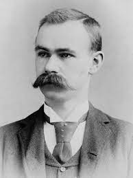

|  |
A história da computação teve seu início a cerca de 2.500 anos com a primeira máquina de calcular, se é que a podemos dar o nome de máquina, o ÁBACO, na medida que os cálculos foram se complicando, os povos antigos se viram com a necessidade de criar algum instrumento que os auxiliasse com estas atividades. Em 1890, o norte americano Hermann Hollerith (1860-1929) desenvolve o primeiro sistema de contagem de dados. A partir de 1930, começam as pesquisas para substituir as partes mecânicas por elétricas onde Alan Turing, matemático inglês desenvolveu a base da computação moderna. |